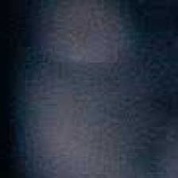

深度伪造图片/视频检测辅助研判报告
最终判断：FAKE
伪造风险评分：0.378594
判定阈值：0.363601
文件基本信息
文件名
query.jpg
query.jpg
媒体类型
image
image
文件大小
295848 bytes
295848 bytes
检测时间
2026-08-25T23:40:18+08:00
2026-08-25T23:40:18+08:00
实际设备
cpu
cpu
有效/无效帧
1 / 0
1 / 0
SHA-256：8b1c6f43491d0f2e179d0950ff285f67001c9fce90eb9e0fc12facbc63249dd6
媒体元数据：{"width": 2000, "height": 3554, "format": "JPG", "channels": 3}
模型与融合配置
空间模型：C:\Users\lanji\AppData\Local\Programs\DeepfakeDetectionSystem\models\spatial_mobilenet_finetuned_gpu\spatial_mobilenet_finetuned_gpu.pt
频域模型：C:\Users\lanji\AppData\Local\Programs\DeepfakeDetectionSystem\models\frequency_stat_formal\frequency_stat_detector.joblib
融合配置SHA-256：8f76abeabb55da1119b28689e15ccd31eac7f1066e401e766987efbb4603e0b2
空间权重=0.620000，频域权重=0.380000， 帧阈值=0.363601，视频阈值=0.458343， 视频聚合=median
评分汇总
空间域中位数：0.605071； 频域中位数：0.009079； 最终融合评分：0.378594
关键帧

逐帧结果
| 候选 | 源帧 | 时间(s) | 状态 | 空间 | 频域 | 融合 | 判断 | 说明 |
|---|---|---|---|---|---|---|---|---|
| 1 | 0 | 0.000000 | VALID | 0.605071 | 0.009079 | 0.378594 | FAKE |
警告信息
- 无
适用边界
模型结果是风险评分，不是系统总体准确率。无人脸、有效帧不足、严重压缩、遮挡、极端角度或未知编码可能降低可靠性。
本结果由自动化模型生成，仅用于深度伪造风险筛查和辅助研判，不应单独作为司法鉴定或案件定性依据。应结合原始文件、传播来源、设备信息及其他证据进行综合判断。